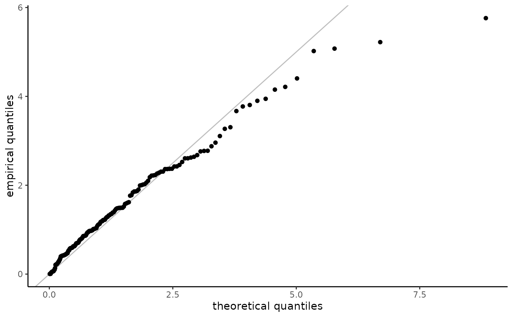

Because of censoring and truncation, the plotting positions must be adjusted accordingly. For right-censored data, the methodology is described in Waller & Turnbull (1992). Only non-censored observations are displayed, which can create distortion.
Arguments
- x
a parametric model of class
elife_par- plot.type
string, one of
basefor base R orggplot- which.plot
vector of string indicating the plots, among
ppfor probability-probability plot,qqfor quantile-quantile plot,erpfor empirically rescaled plot (only for censored data),expfor exponential quantile-quantile plot ortmdfor Tukey's mean difference plot, which is a variant of the Q-Q plot in which we map the pair \((x,y)\) is mapped to((x+y)/2,y-x)are detrended- confint
logical; if
TRUE, creates uncertainty diagnostic via a parametric bootstrap- plot
logical; if
TRUE, creates a plot. Useful for returningggplotobjects without printing the graphs- ...
additional arguments, currently ignored by the function.
Details
For truncated data, we first estimate the distribution function nonparametrically, \(F_n\). The uniform plotting positions of the data $$v_i = [F_n(y_i) - F_n(a_i)]/[F_n(b_i) - F_n(a_i)]$$. For probability-probability plots, the empirical quantiles are transformed using the same transformation, with \(F_n\) replaced by the postulated or estimated distribution function \(F_0\). For quantile-quantile plots, the plotting positions \(v_i\) are mapped back to the data scale viz. $$F_0^{-1}\{F_0(a_i) + v_i[F_0(b_i) - F_0(a_i)]\}$$ When data are truncated, the plotting positions need not be in the same order as the data
Examples
samp <- samp_elife(
n = 200,
scale = 2,
shape = 0.3,
family = "gomp",
lower = 0, upper = runif(200, 0, 10),
type2 = "ltrc")
fitted <- fit_elife(
time = samp$dat,
thresh = 0,
event = ifelse(samp$rcens, 0L, 1L),
type = "right",
family = "exp",
export = TRUE)
plot(fitted, plot.type = "ggplot")

# Left- and right-truncated data
samp <- samp_elife(
n = 200,
scale = 2,
shape = 0.3,
family = "gp",
lower = ltrunc <- runif(200),
upper = rtrunc <- ltrunc + runif(200, 0, 10),
type2 = "ltrt")
fitted <- fit_elife(
time = samp,
thresh = 0,
ltrunc = ltrunc,
rtrunc = rtrunc,
family = "gp",
export = TRUE)
plot(fitted)